untuk perempuan paling indah di hiduppp akuu
Happy Anniversary
sayanggg 💗
— dari aku, dengan seluruh hati
Kita sudah bersama
dan aku masih jatuh cinta setiap hari
Surat buatt sayangg
baca pelan-pelan ya, ini dari akarr selubung lubungnyaa hatiii
Hai, sayanggg, iyaaaa inii buattt sayanggg, kamu yang sekarang lagi baca ini sambil mungkin senyum-senyum sendiri. eaaaakkk hehehe, Hari ini tepat 5 Bulan kita sayanggg sejakk kitaa mulaii mutusinn jalannin hiduppp kitaaa, kesehariann kitaaa, bersamaa ,sampai sekarang aku masih suka heran gmnaaa bisa dari sekian banyak orang di dunia ini, semesta mempertemukan aku dengan kamu? hehee
akuu sampee sekarangg masihh ingett tauu awall kenalll, awall jadiann gmnaa nembakk kamuu heheee darii yangg stalkk kamuu pass bulann puasaa, teruss mulaii followw(tapi gak di follback), laluuu mulaii beranii dm kamuuu, andaaii harii ituu akuu gaa dm, mungkinn gaadaaa ceritaa seindahh iniii. pass ituu akuu gatauu , kaloo kamu orangg yang kek muncul muluu di otakk akuuu, orangg yangg bakall aku kabarinn teruss lebihh darii tantee, dann kaka kakaa, orangg yangg akuu mauu usahainnn terusss
makasihh atass lelahhh , dann usahaaa buatt terusss bertahann dsinii dengann segalaa kekurangann dann jugaaa ke hectic ann hidupp akuu sayanggg. makasihh udaaa mauu nerimaa akuu yangg masihh belajarrr dalamm memperlakukann pasangann akuuu selayaknyaaa. makasihh udahh selaluu negurr akuuu disaat akuu salahhh, nenanginn akuu, berii akuu pelukannn, dann jugaa kehangatann bahkann disaatt kamuuu lelahhpunn kamuu ngasiihhituu ke akuuu andd thenn hal hall yangg kamuu berii, makanann, lasagnaa yanggg kamuu tauu akuu sukaa bangett, kinderjoyy hehe dann setiapp akuu adaa apaa apaa, adaa masalahh, ataupunnn abiss berhasiill, kamuu rayainn akuuu makasihh yangg takk terhingga buatt pasangann akuuuTerima kasih sudah sabar menghadapi aku. akuu tauu akuu bukann orangg yangg sempurnaa akuu mauu teruss belajarr buatt hubungann kitaaa, buatt kamuuu, buatt akuuu, buatt kitaaa. akuu mauu teruss belajarr buatt jadii yangg lebihh baikkk buatt kamuuu, buatt akuuu, buatt kitaaa. ajariii akuu teruss yaa sayanggg
Kita pernah ngelewatinnn masa-masa yang gaa gampangg tauuu. aada hari-hari ketika kita sama-sama bingung, ada hari ketika kita hampir menyerah. tapi justru dari situ aku belajar bahwa mencintaimu bukan cuma soal hari-hari yang indah. Mencintaimu adalah memilihmu lagi dan lagi, di hari yang cerah maupun saat hujan. Dan kalau diberi pilihan seribu kali, aku akan tetap memilih kamu. maafff jikaa adaa putuss, lelahh, ataupun kataa kata baikk yangg disengajaa maupunn berlebihann , yangg dmnaa nyakitinn haatii sayangg buatt sayangg mendemm banyakk halll,kadangg tegurann yangg akuu belumm terimaa malahh aku marahh ke sayangg , tapii akuu tauu kamuuu gaada niatt buat nyakitinn akuuu, kamuuu cumaa mauu ngasiihh yangg terbaik buatt akuuu, buatt kitaaa
akuu sukaa sayangg ketawaa, nyenderr kaloo capeee, ceritaa dengann exciteddd akuu sukaa caraa sayangg pedulii sama hal hall kecilll, caraa sayangg nenanginn akuu, kasihh akuu spaceee Aku suka versi saayangg yangg ceriaaa, lelahh, dann jugaaa apapunn ituu soall sayangg apalagii kadangg ketawanyeee sampee nyubitt dadaa aku, hishhhh heheee, maininn ketekkk akuuu
kalauu suatuu saatt sayangg raguuu, tolongg ingett hal hal ini yaa saayangg: sayangg itu berhargaa sayanggg ituu makhlukk yangg sangatt haruss dicintaaii selaluu, akuu mungkinn belumm bisaa kasihhh sepenuhnyaa ke sayangg akuu bakall teruss usahaa bikinn sayanggg senenggg, mulaii kecil kecilann duluu yaa sayangg, akuu bakall tumbuhh jadii lelakii yangg pantess adaa disamping sayangg terusss, tumbuhhh sama sayangg, bangunn rumahh kitaa pelann pelann
semogaaa setiapp detikk, menit, jam, harii, minggu, bulann, tahunn kitaa selalu dikasihh kesehatan sayngg, keberkahann, rezekii, dann yang pastii bahagiaaa selaluu. semogaa kitaa bisaa selaluu salingg menguatkann, mendengarkann, mengertii satu saama lainn, dann mendoaakann satu samaa lainn . semogaa semuaa mimpii yang kitaa pernahh ceritakann, perlahann semuaa terwujuddd, dann semogaa disetiapp prosess ituu, kitaa selaluu adaaa
Happyy anniversarry yaaa cintaaa akuu, bububb akuuu, cipaa akuu, calonn istrii akuu . makasihh udaaa selaluu jadii alasann aku buatt teruss adaa, buatt teruss bangkittt, dann jadii ceritaa yanggindahh di hidupp akuuu. akuu sayanggg bangett sama kamuuu sayangg 🌷
jadii milikk
akuuu selaluu yaa sayanggg 💞
Perjalanan Kita
potongan-potongan kecil yang jadi cerita besar
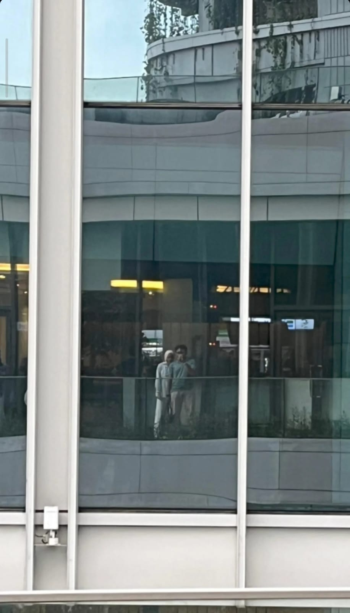
our first date
awall kitaa ketemuu, niatt mainnn ke perpuss belumm jadii waktu ituu, alhasill ke familymart kuningannn hehee, banyakk ceritaa awall kenall sayangg
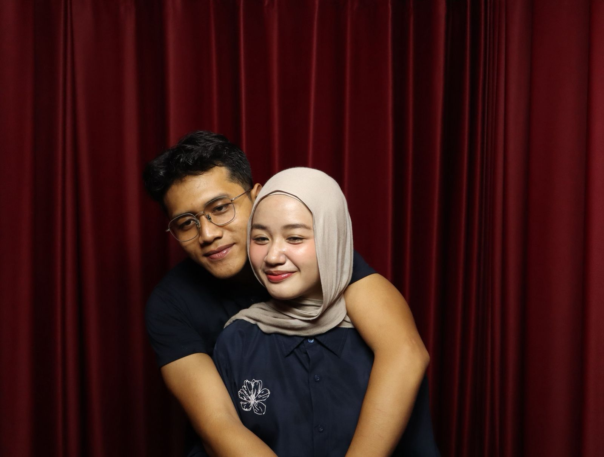
1 bulan Pertama
awall dmnaa kitaaa adaa sayanggg, 1 bulann ituu indahh, gaaada bulan bulan setelahnya kalo gaada 1 bulann
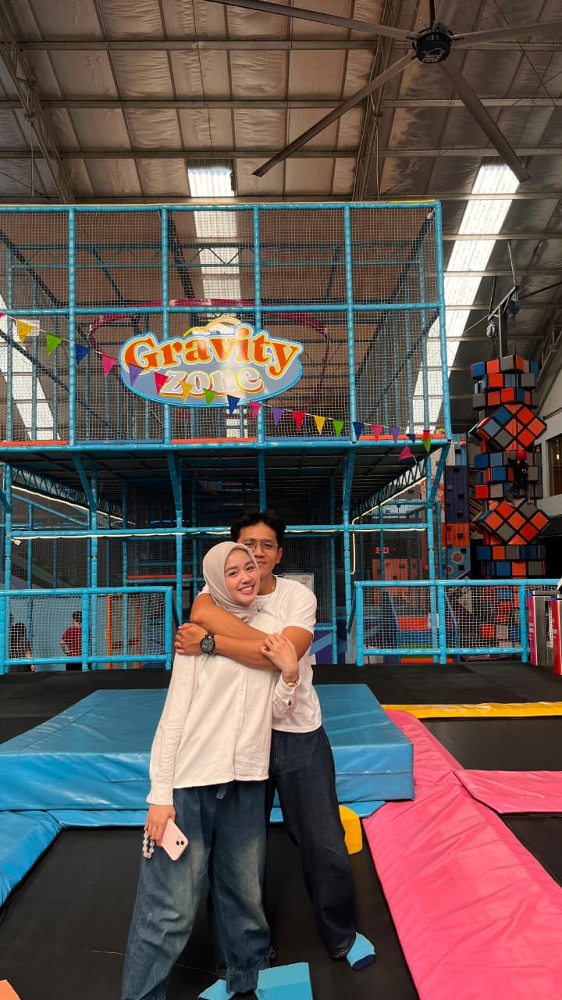
Date kita untuk 2 bulan jadiann
dsinii kitaa mainn seruu bangetttt, lompatt lompatt, lari larii, manjatt manjattt, heheee
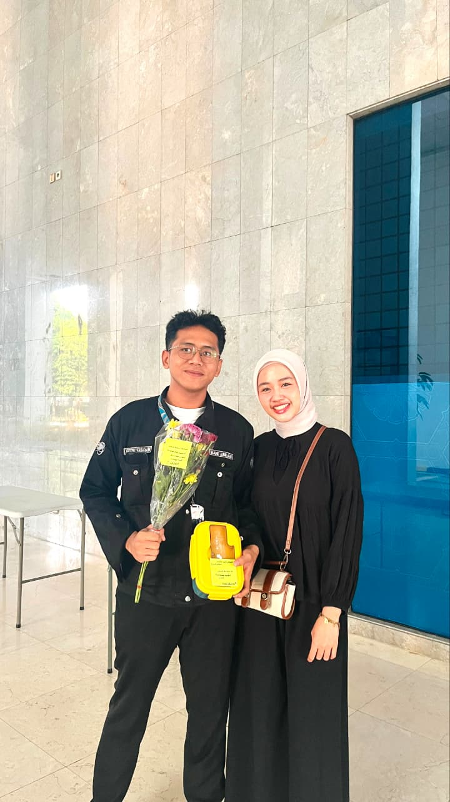
first time dapet bungaa
kamu datengg ke acara aku, kasih hal yang gapernah aku dapett, aku sukaa bangett
Galeri Kenangan
ganti foto di folder foto/ sesuai nama file
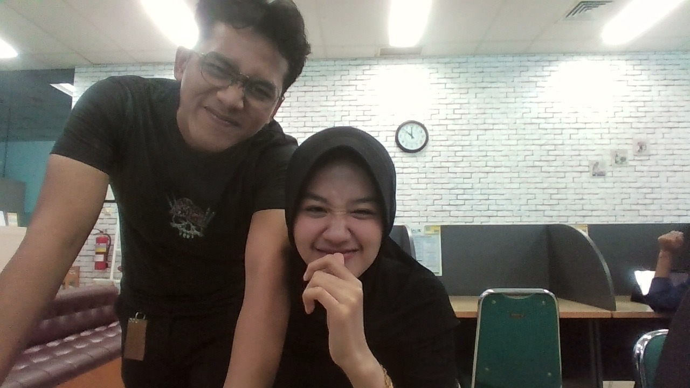
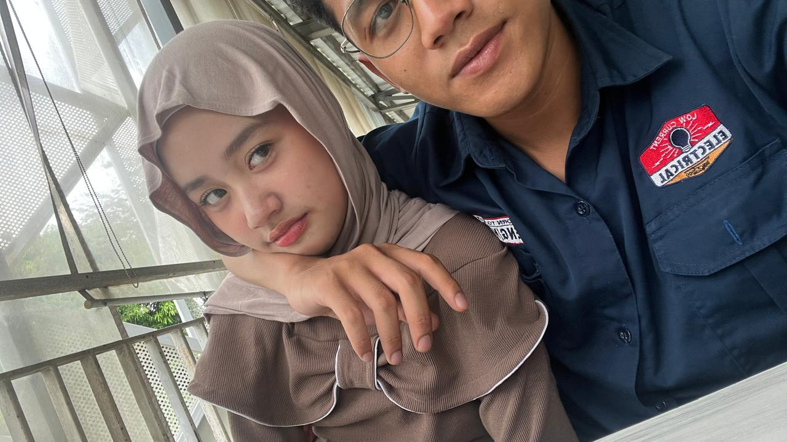
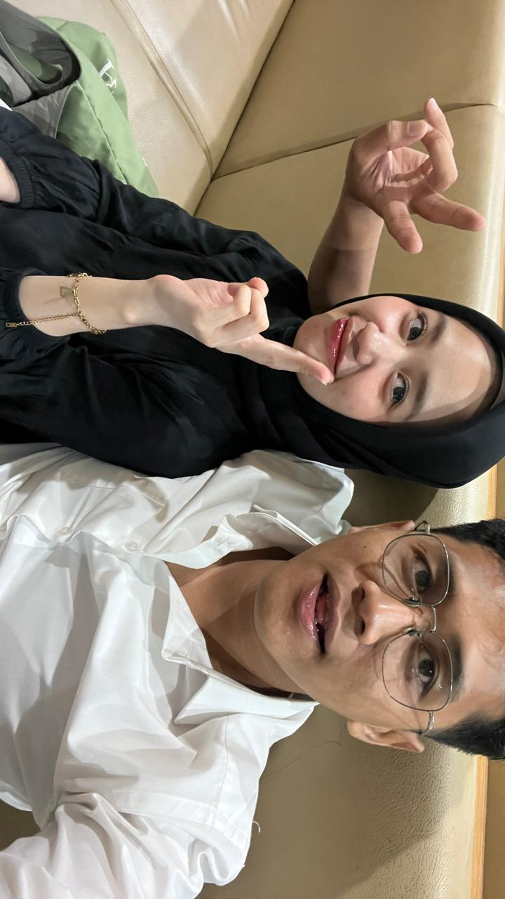
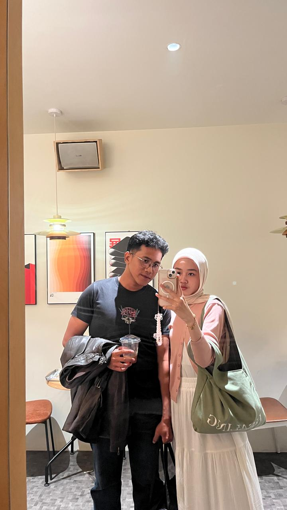
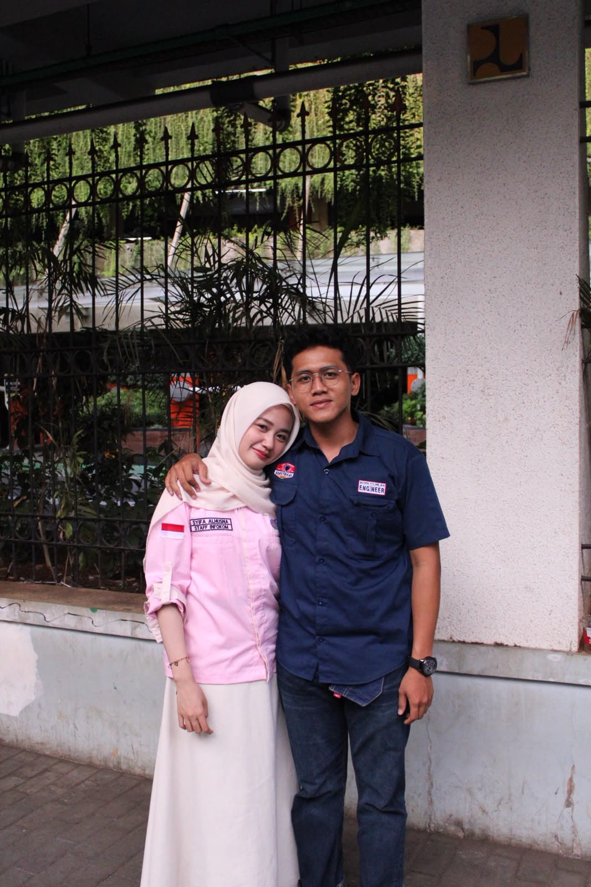
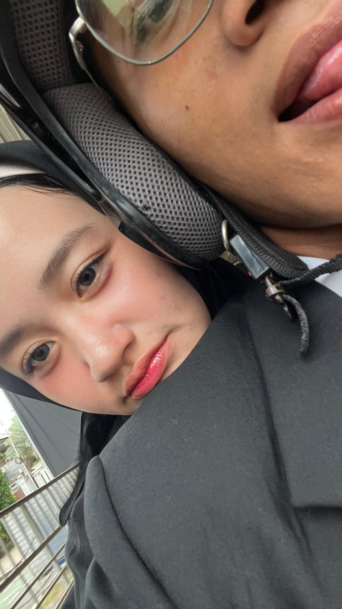
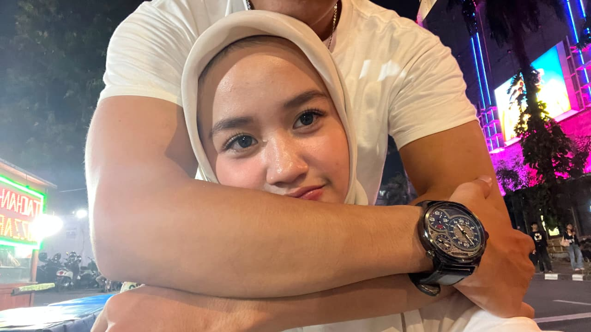
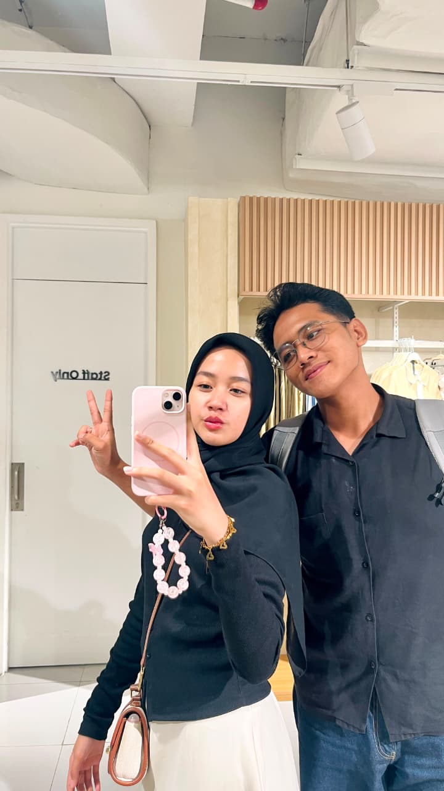
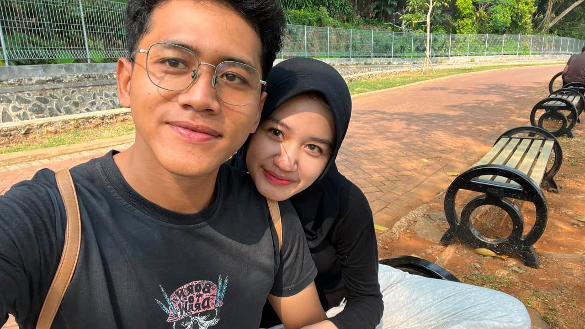
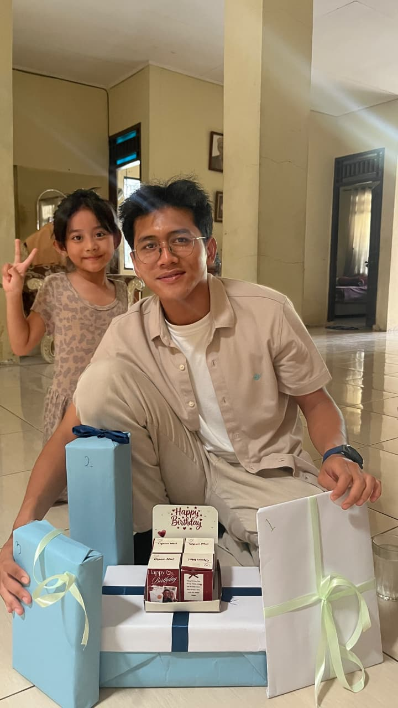
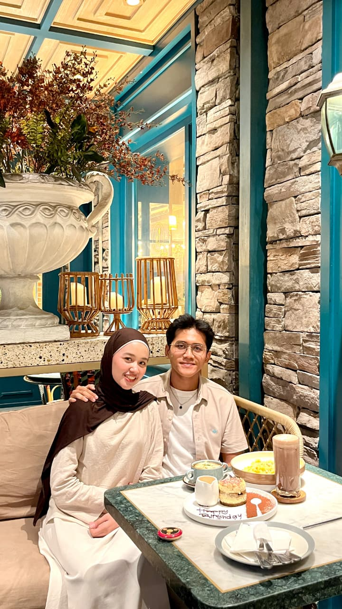
Ucapan buatt amuuuu
kartu-kartu kicikkkk 💌
Terima Kasih
Terima kasih sudah selalu ada, bahkan di saat aku sendiri lupa caranya bersyukur. Kamu adalah hadiah terbaik tahun ini, dan tahun-tahun yang akann datangg.
Aku Sayang Kamu
Tiga kata yang sederhana, tapi isinya seluruh aneeee. Aku sayang kamu.
Doa buat sayangg
Semoga kamu selalu sehat, bahagia, dilindungi, dan dikelilingi orang-orang baik. Semoga semua cita-citamu terwujud satu per satu.
janjii akuu
Aku janji akan terus belajar jadi lebih baik, lebih sabar, dan lebih dewasa, supaya kamu selalu merasa aman sama akuuu.
Untuk Masa Depan
Aku tidak tahu persis apa yang menunggu di depan, tapi selama itu bersamamu, aku siap melangkah ke mana pun. semogaa mamahh teacherr papah engineer itu akan selalu adaa
Kenapa Aku Cinta Kamu
ketuk kartunya 💞
Selamat Anniversary,
Sayang 🌹
semoga kita terus mekar bersama, setiap hari